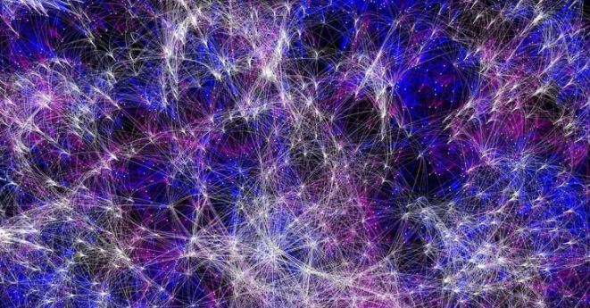

String Theory is one of the revolutionary and most controversial concepts in physics that aims to unify all of the particles and fundamental forces of nature into one single theory.
Along with sentience, dexterous hand, sharp brain, what comes with a human body is an inquisitive and overly curious mind which keeps figuring out the ideas behind everything around it. The amazingly coordinated universe of ours is a source of awe for us and a fitting subject to study.
We have come a long way from Aristotle’s fundamental element hypothesis to the prevalent Standard Model in our quest to unravel the secrets of the Universe. But the line of thoughts has been pretty linear all this time.
String theory, often called the “theory of everything,” is a relatively young science that includes such unusual concepts as superstrings, branes, and extra dimensions. Scientists are hopeful that string theory will unlock one of the biggest mysteries of the universe, namely how gravity and quantum physics fit together.
String theory is a work in progress, so trying to pin down exactly what the science is, or what its fundamental elements are, can be kind of tricky. The key string theory features include:
There are also other possible string theory features, depending on what theories prove to have merit in the future. Possibilities include: